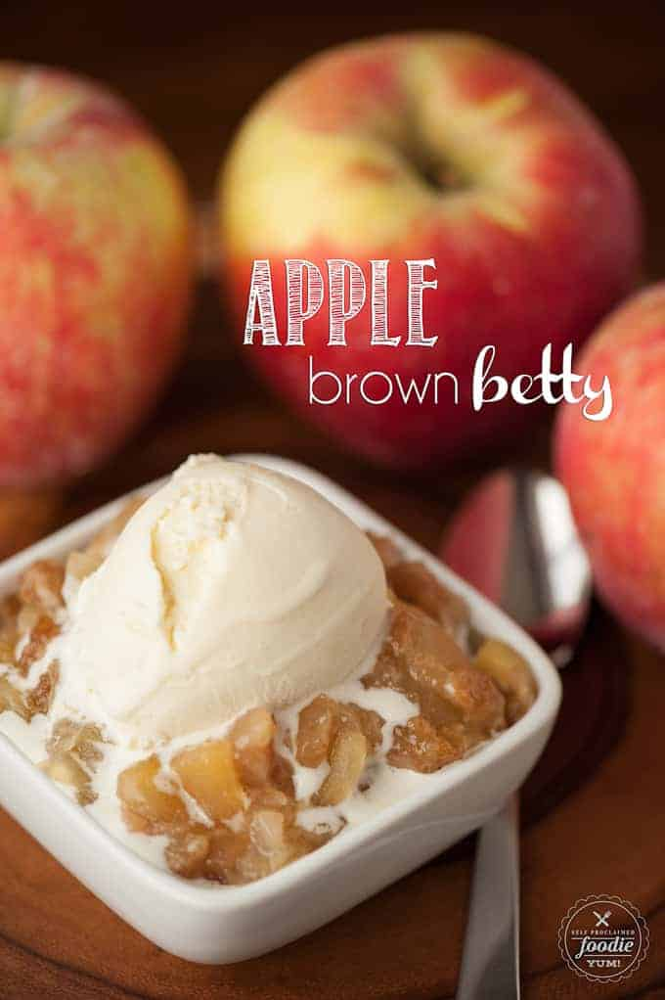

Apple Brown Betty

As fall arrives, so do the apples and apple recipes! One of my favorites is the historical Apple Brown Betty dessert.
My version consists of thinly sliced fresh apples with a no oat sweet and buttery topping. Just a few ingredients come
together to make this cinnamon spice sweet fruit dessert.
Ingredients
- 4-6 large apples
- 1 lemon
- 3/4 cup all purpose flour
- 1/2 cup brown sugar
- 1/2 cup granulated sugar
- 1 tsp pumpkin pie spice
- 1/2 cup cold butter
Instructions
- Preheat oven to 350 degrees F.
- Add apple slices to a 9x9 baking dish. Cut lemon in half and squeeze juice over apples. Toss apples to evenly coat.
- In medium sized bowl, combine flour, sugars, and spices. Add cold butter and use a pastry blender to work the butter
into the dry ingredients, cutting it into small pieces. You want the mixture to be crumbly with little to no dry
ingredients left that haven't touched the butter. Sprinkle all of the topping over the apples evenly.
- Cover with aluminum foil and cook in preheated oven for 40 minutes. Remove foil and allow to continue cooking until the
topping is crisp, about 10-20 additional minutes. Serve warm with vanilla ice cream.